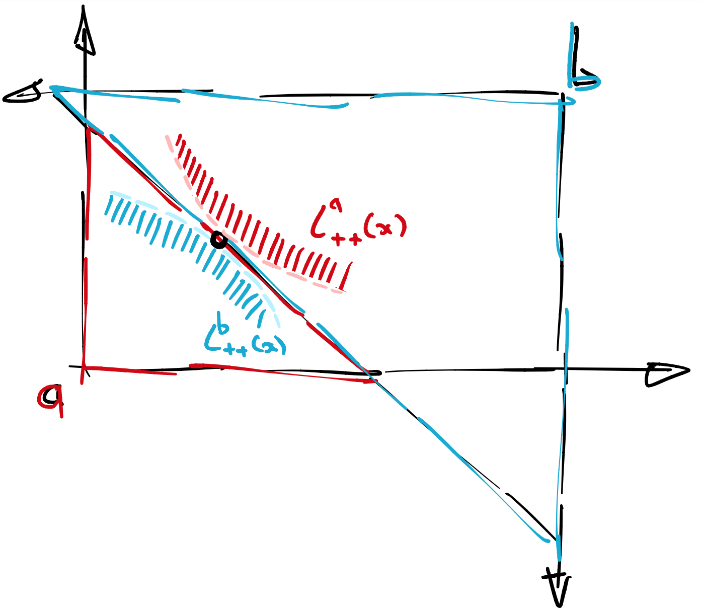
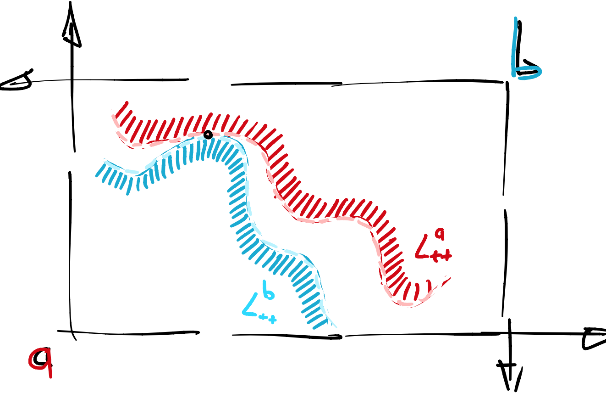
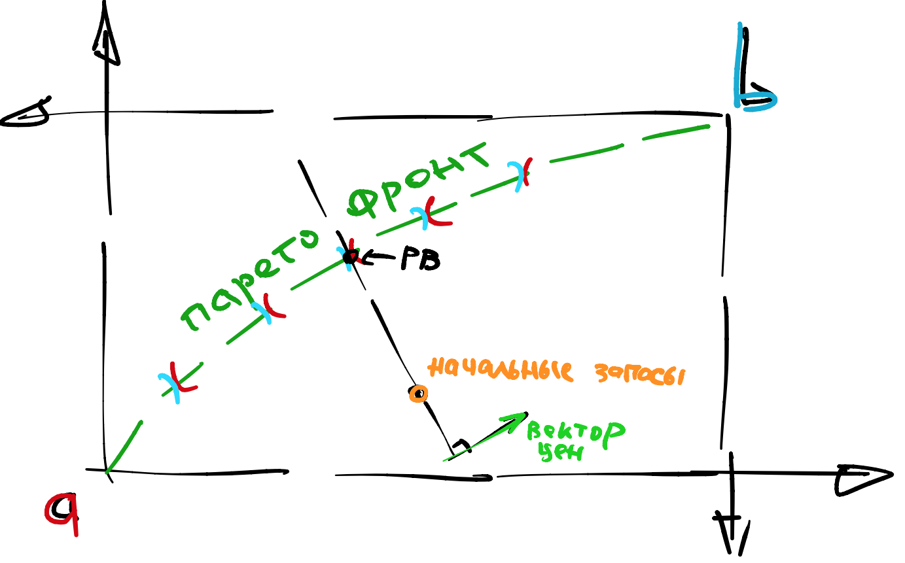
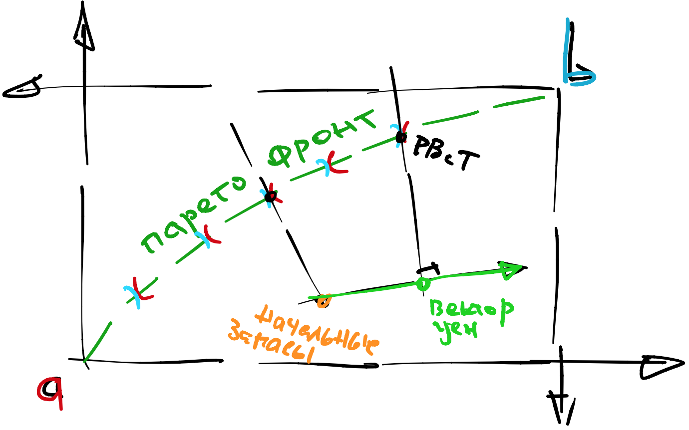

Одиннадцатая лекция, часть 2#
В этой части лекции мы продолжим говорить об экономиках обмена.
Равновесие Вальраса#
Существование Равновесия Вальраса - неочевидное утверждение.
Действительно, почему это найдется такой вектор цен, что после большого количества покупок и продаж не возникнет, скажем, дефицита одного из товаров?
Короткий ответ - если дефицит есть, то надо просто немного повысить цену на этот товар. Более подробно об этом я поговорю на следующей неделе.
РВ против ПО#
В чем разница между Равновесием Вальраса и Парето-Оптимумом?
В Равновесии Вальраса есть цены (это главное). Происхождение этих цен нас не интересует, можно считать, что они написаны кем-то на гигантском табло. Далее каждый агент продает свои запасы по этим ценам и уже далее максимизирует полезность, покупая на эти деньги товары.
{kind=link}
В Парето-Оптимуме цен нет, бюджетных множеств тоже нет. Однако есть что-то очень похожее - верхние Лебеговы множества \(L_{++}\). Согласно определению, они не должны пересекаться.
{kind=link}
В отличие о РВ, в ПО верхние Лебеговы множества не обязательно разделены линейно, это более общее условие. Конечно, если экономика “выпуклая”, то разделение всегда будет линейное (по Теореме о Разделяющей Гиперплоскости).
Как устроена площадка#
Денег изначально у агентов нет, а есть только запасы товаров. Агенты приходят на абстрактную торговую площадку и начинают менять запасы на деньги по всем известному курсу \(\vec p\). Деньги печатаются, по мере необходимости, а товары остаются на центральном складе.
Кто печатает деньги и кто руководит площадкой? В модели этого не сказано, а на практике этим занимается специальный государственный орган.
Далее, агент начинает уже тратить появившиеся деньги на товары. Причем агент не видит товары и откуда они появляются, он просто “запрашивает” определенное количество. В некотором смысле он покупает “обещание” получить товар после окончания торгов.
Когда торги закончатся, организатор обязуется выполнить обещания в точности, причем не должно остаться лишних товаров на складе (товарное равенство).
Задача организатора - выбрать цены \(\vec p\) так, чтобы все получилось.
Закон Вальраса#
Напомним, что при локальной ненасыщаемости полезностей, агенты полностью тратят все свои деньги:
это называется Законом Вальраса. Формально это не является частью определения РВ, но практически моментально вытекает из него.
Отсюда можно сделать вывод, что после окончания торгов у агентов не останется денег на руках, другими словами, выполнено денежное равенство:
Действительно, справа стоят все деньги, полученные после продажи начальных запасов, а слева – все деньги, потраченные на покупку товаров.
РВ как система уравнений#
Поиск Равновесия Вальраса можно представить себе как несколько групп уравнений.
товарные равенства, \(K\) штук: что сумма товаров в каждой категории равны соответствующим общим запасам, т. е. допустимое состояние экономики;
условия оптимальности, \(K \cdot I\) штук: что каждый агент выбирает потребление оптимально, т. е. условия первого порядка;
законы Вальраса, \(I\) штук.
Неизвестные тоже можно разбить на группы:
цены, их \(K\) штук;
собственно потребления, их \(K \cdot I\) штук;
множители лагранжа, их \(I\) штук.
Казалось бы, у нас система из \(I\cdot K + K + I\) уравнений и столько же неизвестных, но есть один подвох - система линейно зависима.
Дело в том, что если выполнены все товарные равенства, то есть мы находимся в ящике Эджворта, и выполнены законы Вальраса для всех кроме одного агента, то последний закон Вальраса выполняется автоматически.
Другими словами, если все кроме одного агента потратили все деньги, и товары перешли из одних руки в другие, то из этого алгебраически вытекает, что последний агент также потратил все свои деньги.
То есть линейно независимых уравнений, на самом деле, \(I\cdot K + K + I - 1\).
Получается, что уравнений больше, чем неизвестных?
Нет, на самом деле, неизвестных тоже \(I\cdot K + K + I - 1\), ведь цены определены с точностью до константы, а значит цену одного из товаров (обычно последнего) можно приравнять к 1, без потери общности.
Связь РВ с ПО#
Легко видеть, что первый блок уравнений (товарные равенства) у РВ и ПО - одинаковый. Они просто фиксируют ящик Эджворта и точку начальных запасов в нем.
Второй блок уравнений (условия оптимальности), на самом деле, тоже совпадает, потому что это условия касания кривых безразличия.
Наконец, третий блок - это условие того, что бюджетная линия проходит сразу через две точки: начальные запасы и предполагаемое РВ.
{kind=link}
Получается, что РВ - выбирает на Парето-фронте (как правило) одну точку.
РВ с трансфертами#
В равновесии Вальраса с трансфертами мы субсидируем одних агентов за счет других.
{kind=link}
По сути, трансферты являются способом изменить начальные запасы.
Трансферты также позволяют легко перемещаться вдоль Парето-фронта. Зафиксируем старые начальные запасы и старое РВ и попробуем переместиться в какое-то новое РВ. Для этого найдем точку, лежащую в пересечении двух перпендикулярных прямых, как на рисунке. Это начальные запасы, которым соответствует новое РВ без трансфертов. Соответственно, трансферты считаются как стоимость (при новых ценах) перехода из старых запасов в новые.